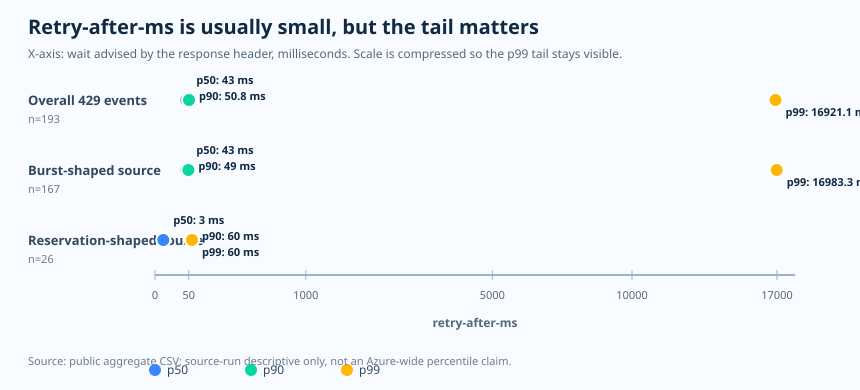
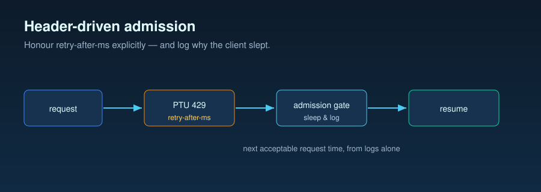

Operations essay · PTU recovery and 429 handling
429 is a recovery signal, not just an error
A 429 from a saturated PTU target should not start a blind polling loop.
It already carries the recovery signal the client needs: retry-after-ms.
The operating question is not “did the call fail?” but “who owns the next
decision: wait, redirect, or give up?”
Question
When PTU capacity says “not now,” how should the client decide the next move?
Evidence
Microsoft Learn defines the header contract; public aggregate runs show why median-only waits miss the tail.
Decision
Use one retry owner. Honor the header, add jitter, and redirect only when latency policy demands it.
Official spec · what the service tells you
The header is the admission signal
Microsoft Learn describes PTU high-utilization handling as an immediate
429 path with retry-after-ms and retry-after
response headers. The same production guide explains that the wait can
be used either for client-side retry or for redirecting the request to a
different serving target.
What is documented
Treat retry-after-ms as a service-provided wait value.
It is stronger than a guessed fixed reset interval.
What is not documented
The exact formula behind the wait value is not public. Do not invent a deterministic reset model in your client.
Operational inference
If the header already says when to try again, health-check polling is usually a weaker signal plus extra traffic and noisier telemetry.
Observed evidence · public aggregate only
The median was tiny; the tail was not
retry-after-ms
percentiles from public aggregate 429 events. The X-axis is the wait
advised by the response header, in milliseconds. The dots are p50,
p90, and p99 for each source group.

| Source group | 429 count | p50 | p90 | p99 | Max |
|---|---|---|---|---|---|
| Overall | 193 | 43 ms | 50.8 ms | 16,921.12 ms | 17,258 ms |
| Burst-shaped source | 167 | 43 ms | 49 ms | 16,983.26 ms | 17,258 ms |
| Reservation-shaped source | 26 | 3 ms | 60 ms | 60 ms | 60 ms |
How to read this table
The median says many 429s were short-lived. The p99 says a production wrapper still needs a tail policy: sleep only up to the latency budget, then redirect or fail gracefully. The source split matters because burst-shaped and reservation-shaped pressure did not look the same.
Operating pattern · one owner for retry
Do not stack retry loops
The safe pattern is boring on purpose: pick exactly one component to own
429 recovery. If the SDK is configured to retry, let it own the wait. If
an application router owns recovery, disable SDK auto-retry and make the
router parse retry-after-ms directly.
retry-after-ms, falls back to retry-after,
emits safe throttle events, and refuses double-retry ownership.

Sleep path
Use when throughput matters more than per-call latency. Wait the header value plus jitter, then try again.
Redirect path
Use when latency matters more than staying on PTU. Route to a standard target as soon as the 429 arrives.
Give-up path
Use when both wait and redirect violate policy. Return a controlled response rather than hiding retry storms.
Fallback · native or custom
Redirect is a policy choice, not a panic button
Microsoft Learn's spillover feature can redirect overage traffic to a standard target and exposes headers that identify spillover behavior. That is the low-operations path when the platform-supported shape fits. A custom router is still useful when the application must decide before the PTU target returns 429, or when routing policy depends on tenant, region, latency budget, or business priority.
Native spillover
Best when the simple overflow lane fits and extra routing logic would add more risk than value.
Custom router
Best when application policy must choose among wait, redirect, and give-up before user latency is spent.
Anti-pattern
SDK retry plus router retry plus spillover can multiply attempts. Consolidate ownership first.
Sources and evidence boundary
- Official spec, accessed 2026-06-04: Microsoft Learn PTU production operations guide.
- Official spillover behavior, accessed 2026-06-04: Microsoft Learn spillover traffic management guide.
- Public aggregate evidence: retry-after-ms percentile CSV and 429 event CSV.
- Public reference implementation: header-driven admission controller.
The practical rule: do not poll blindly for PTU recovery. Honor the header, log the decision, and make the latency tradeoff explicit.